この文書では，Windows 版 Visual Studio Code のごく初歩的な使用法について記述する． 他の OS の場合は，必要に応じて適宜読み替えていただきたい． インターネット上にも様々な情報があるので，各自研究されたい．
なお，インストール方法と日本語化・初期設定については，別に文書を作成したので，そちらを参照されたい
文字単位での入力・削除・編集はメモ帳と同様に行える．
VS Code も，通常のアプリケーションと同様に様々な起動方法があるが，スタートボタンから起動することを推奨する．
「スタートボタン」→「V」→「Visual Studio Code」→「Visual Studio Code」で起動する．
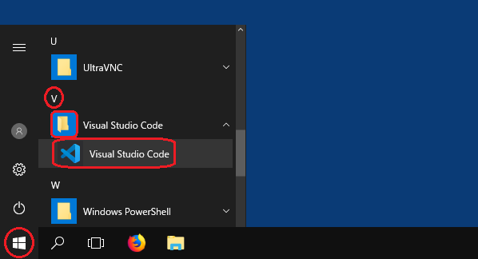
「スタートボタン」をクリックした後，キーボードから名前を「visu...」と入力していき， 適当なところで，表示されている「Visual Studio Code」を選択する． （CSLドメインPCでは，「visu」で選択肢が1つに絞られる）
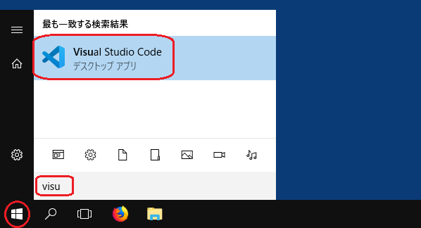
VS Code のインストール時の「追加タスクの選択」で，
「エクスプローラーのファイル コンテキスト メニューに [Code で開く] アクションを追加する」
を選択していた場合，Windows のエクスプローラ等でファイルのアイコンを右クリックして表示されるメニューから
「Code で開く」を選んで VS Code で開くことができる．
（CSLドメインPC（教室のPC）では，この方法を用いると，各種設定が無効になるので，推奨できない）
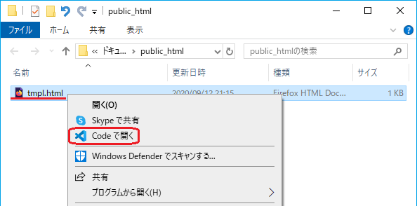
いずれの場合も，これ以後は「ピン留め」されたアイコンをクリックするだけで起動できる．
（CSLドメインPC（教室のPC）では，サインアウト時にピン留めしたアイコンが消えてしまうので，推奨できない）
VS Code のインストール時の「追加タスクの選択」で， 「デスクトップ上にアイコンを作成する」 を選択していた場合，デスクトップ上にアイコン（ショートカット）が作成されている．
作成されていなかった場合でも，「スタートボタン」→「V」→「Visual Studio Code」→「Visual Studio Code」のアイコンを デスクトップにドラッグすると，そこ（デスクトップ上）にショートカットが作成される．（前項の図の③）
これ以後は，作成したショートカットのダブルクリックで起動できる． また，開きたいファイルのアイコンをショートカットにドラッグ＆ドロップするとそのファイルを開くことができるが， それ以後，初期設定の「フォルダーを開く」で設定したフォルダーが自動的に開かなくなるので， あまり好ましくない． （「ファイル」メニューの「フォルダーを開く」か「最近使用した項目を開く」で元に戻せるが……）
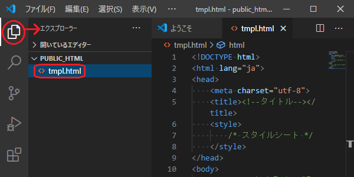
メモ帳などの通常のアプリケーションと同様に，「ファイル」メニューの「ファイルを開く」 （または Ctrl-O）でファイルを開くこともできる．
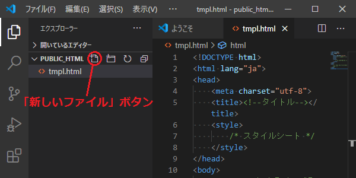
メモ帳などの通常のアプリケーションと同様に，「ファイル」メニューの「新規ファイル」 （または Ctrl-N）でファイルを新規作成することもできる．
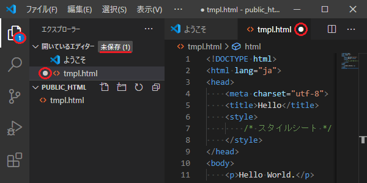
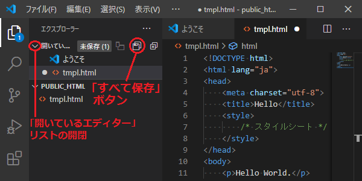
ファイル名タブのファイル名の後の × マークをクリックすれば，そのファイルを閉じられる．（下図）
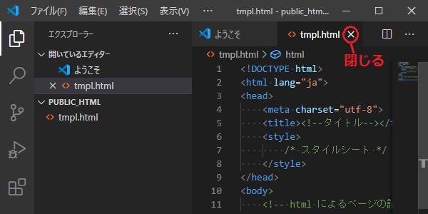
（編集中のテキストを印刷するためには，拡張機能 Print を追加しておく必要がある．以下では，この Print が既に追加されていると仮定する．）
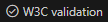
をクリックしたとき， そのHTML文書の文法エラーをチェックしてくれる．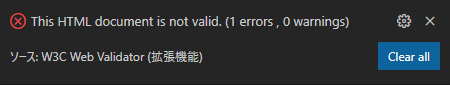
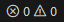
をクリックすると，エディタの下部に「問題」エリアが現れ，そこにエラーの内容や場所が表示される． （もう一度クリックすると「問題」エリアの表示は消える）{kind=link}